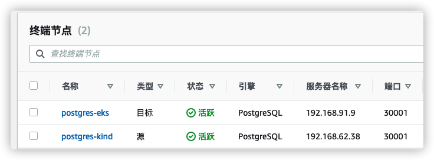

E-使用DMS迁移数据
AWS Database Migration Service (AWS DMS) 是一项云服务，可轻松迁移关系数据库、数据仓库、NoSQL 数据库及其他类型的数据存储。您可以使用。AWSDMS 将您的数据迁移到AWS云，在本地实例之间（通过AWS云设置）或云与本地设置的组合之间。
配置数据库内网访问
-
打开 Cloud9 IDE
-
首先配置 kind 集群 postgres
- 准备 NodePort 服务配置文件
cd ${HOME}/environment/counter-kind
cat > postgres-nodeport-svc.yaml <<EOF
apiVersion: v1
kind: Service
metadata:
name: postgres-nodeport
labels:
app: postgres-nodeport
spec:
type: NodePort
ports:
- port: 5432
nodePort: 30001
selector:
app: postgres
EOF
- 创建新NodePort服务
kubectl --context kind-kind apply -f postgres-nodeport-svc.yaml
- 检查连接
- 安装 postgresql 客户端
sudo yum install postgresql -y
尝试连接
psql -h localhost -p 30001 -U postgres
输入密码 supersecret
- 检查数据
select * from importantdata;
请确保本地能够连接到 kind 集群里的 postgresql，并能成功查询数据后再进入下一步
- 然后配置 eks 集群 postgres
- 请先确保当前默认 context 是 ekslab，如果不是请先进行切换
kubectl config current-context
- 同样先准备 NodePort 服务配置文件
cd ${HOME}/environment/counter-eks
cat > postgres-nodeport-svc.yaml <<EOF
apiVersion: v1
kind: Service
metadata:
name: postgres-nodeport
labels:
app: postgres-nodeport
spec:
type: NodePort
ports:
- port: 5432
nodePort: 30001
selector:
app: postgres
EOF
这里为了实验方便，手动指定了NodePort 端口为 30001，如果出现端口号被占用，可以指定其他空闲端口号，或者不指定（部署自动生成以后再找出端口号）
- 执行部署
kubectl apply -f postgres-nodeport-svc.yaml
- 检查连接和数据
- 首先找出 postgres 所在的节点
kubectl get po postgres-0 -o wide
- 然后连接到 eks postgres
psql -h ip-192-168-91-9.ec2.internal -p 30001 -U postgres
输入密码 supersecret
- 然后查询数据
select * from importantdata;

请确保本地能够连接到 eks 集群里的 postgresql，并能成功查询数据后再进入下一步
部署DMS
-
进入 DMS 控制台“子网组”页面 https://console.aws.amazon.com/dms/v2/home?region=us-east-1#subnetGroup
-
点击 创建子网组，填写配置参数
- 名称：
eks-dms-subnet-group - 描述：
subnet group for eks lab - VPC：选择准备阶段创建的labs-eks-VPC
- 添加子网：选择2个私有子网
-
填完参数后，点击 创建子网组
-
进入 DMS 控制台“复制实例”页面 https://console.aws.amazon.com/dms/v2/home?region=us-east-1#replicationInstances
-
点击 创建复制实例，填写配置参数
- 名称：
postgres-kind-2-eks - VPC：选择准备阶段创建的labs-eks-VPC并取消“公开访问”
- 展开高级安全和网络配置，选择前面创建的子网组，并添加2个安全组
ControlPlaneSecurityGroup和SharedNodeSecurityGroup
-
填完参数后，点击 创建
-
进入 DMS 控制台“终端节点”页面 https://console.aws.amazon.com/dms/v2/home?region=us-east-1#endpointList
-
点击 创建终端节点，选择 源终端节点，准备创建数据复制来源（kind）连接
-
填写来源终端参数后，点击创建终端节点
- 终端节点标识符：
postgres-kind - 源引擎：PostgreSQL
- 手动提供访问信息：
- 服务器名称 Cloud9 实例的内网IP，可以通过控制台查看，或用命令
curl http://169.254.169.254/latest/meta-data/local-ipv4，例如 192.168.62.38 - 端口
30001 - 用户名
postgres - 密码
supersecret - 数据库名称
postgres
- 服务器名称 Cloud9 实例的内网IP，可以通过控制台查看，或用命令

-
再次点击 创建终端节点，选择 目标终端节点，准备创建数据复制目标（eks）连接
-
填写目标终端参数后，点击创建终端节点
- 终端节点标识符：
postgres-eks - 目标引擎：PostgreSQL
- 手动提供访问信息：
- 服务器名称是运行 postgres pod 的工作节点内网IP (注意是IP，不是DNS)，例如 192.168.91.9，可以通过命令查找
kubectl describe po postgres-0 | grep Node - 端口
30001 - 用户名
postgres - 密码
supersecret - 数据库名称
postgres
- 服务器名称是运行 postgres pod 的工作节点内网IP (注意是IP，不是DNS)，例如 192.168.91.9，可以通过命令查找
- 测试连接
- 首先请确保复制实例 postgres-kind-2-eks 状态为 可用
- 两个终端节点状态也都为 可用

- 首先验证源连接，点击 postgres-kind，选择连接 tab 页，再点击测试连接
- 选择之前创建的复制实例 postgres-kind-2-eks，然后运行测试，确保状态为 successful
- 重复步骤，选择 postgres-eks 终端，运行测试，确保状态为 successful
请确保2个终端节点连接测试，状态都为successful才进入下一步
迁移数据
-
进入 DMS 控制台“数据库迁移任务”页面 https://console.aws.amazon.com/dms/v2/home?region=us-east-1#tasks
-
点击创建任务，配置任务参数
- 任务标识符：
migrate-2-eks - 复制实例：postgres-kind-2-eks
- 源数据库终端节点：postgres-kind
- 目标数据库终端节点：postgres-eks
- 迁移类型：迁移现有数据并复制正在进行的更改
- 任务设置里勾选**启用 CloudWatch 日志
- 配置复制规则，展开“表映像”->“选择规则”，点击“添加新选择规则”，勾选“输入架构”
-
其他参数保持默认，点击创建任务
-
检查任务执行情况
当进度为100%时，进入下一步。
如果出现问题，可以进入详情页，然后查看日志
- 浏览器打开EKS ELB 地址
可以看到此时原来在Kind集群的计数统计已经同步过来
- CDC 同步测试，因为我们在前面的步骤中，复制任务模式是完全加载，持续复制，kind源库的增量数据也会同步到eks目标库
- 打开两个浏览器窗口，左边是 kind 集群的服务，右边是eks 集群的服务
- 在左边点击count++ 按钮，然后在右边点击浏览器刷新按钮
可以看到增量数据已经由DMS自动同步过去
- 本 workshop 仅为演示方便，因而前面的步骤直接将迁移到eks的服务发布到外网，方便查看计数。 真实场景下，应是测试验证OK后，选择迁移窗口，应用和数据都迁移完成了，再停掉老集群，切换新集群对外提供服务。
结语
恭喜！ 您已经完成了 Workshop。